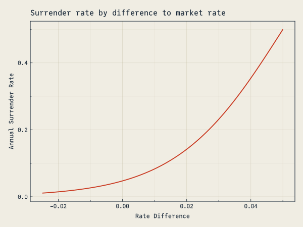
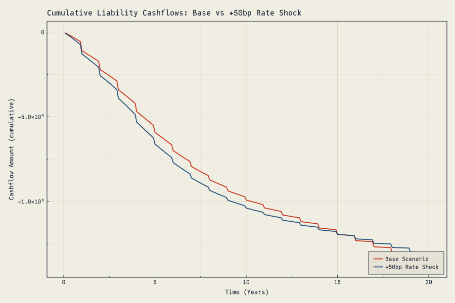
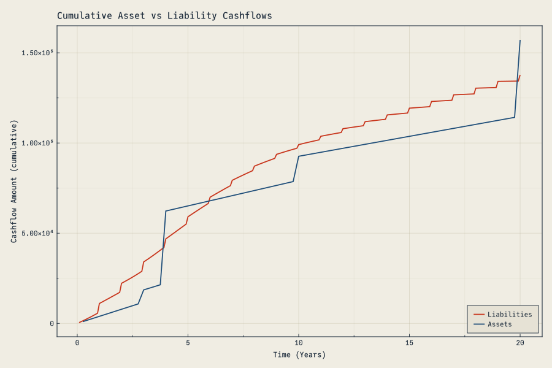
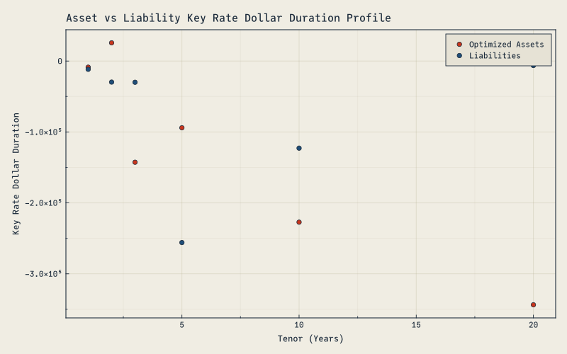

using FinanceCore # provides Cashflow object
using DifferentiationInterface # autodiff
import ForwardDiff # specific autodiff technique
using CairoMakie # plotting
using DataInterpolations # yield curve interpolation
using Transducers # data aggregation
using JuMP, HiGHS # portfolio optimization
using LinearAlgebra # math
using BenchmarkTools # benchmarking
using OhMyThreads # multi-threading
include(joinpath(@__DIR__, "..", "..", "assets", "themes", "cassette_futurism.jl"))
set_theme!(cassette_futurism_theme())Asset liability modeling requires computing derivatives of portfolio values with respect to yield curve changes. Traditional approaches use finite difference methods or analytical approximations, but automatic differentiation (“autodiff” or “AD”) provides exact derivatives with minimal additional computation. This post demonstrates how to implement ALM workflows using autodiff in Julia.
Interest Rate Curve Setup
We start by constructing a yield curve using cubic spline interpolation:
The curve function creates a discount factor curve from zero rates and time points. This curve will serve as input to our value function, which makes it straightforward to compute sensitivities by differentiating with respect to the rate parameters.
zeros = [0.01, 0.02, 0.02, 0.03, 0.05, 0.055] #continuous
times = [1., 2., 3., 5., 10., 20.]
function curve(zeros, times)
DataInterpolations.CubicSpline([1.0; exp.(-zeros .* times)], [0.; times])
end
c = curve(zeros, times)CubicSpline with 7 points ┌──────┬──────────┐ │ t │ u │ ├──────┼──────────┤ │ 0.0 │ 1.0 │ │ 1.0 │ 0.99005 │ │ 2.0 │ 0.960789 │ │ 3.0 │ 0.941765 │ │ 5.0 │ 0.860708 │ │ 10.0 │ 0.606531 │ │ 20.0 │ 0.332871 │ └──────┴──────────┘
Asset Valuation Framework
The core valuation function operates on any instrument that produces cashflows:
function value(curve, asset)
cfs = asset(curve)
mapreduce(cf -> cf.amount * curve(cf.time), +, cfs)
endvalue (generic function with 1 method)This design separates the valuation logic from the instrument definition. Each asset type implements a callable interface that generates cashflows given a yield curve. Note how the asset itself gets passed the curve (the asset(curve) statement) to determine the cashflows.
For fixed bonds, we create a structure that generates periodic coupon payments:
struct FixedBond{A,B,C}
coupon::A
tenor::B
periodicity::C
end
function (b::FixedBond)(curve)
map(1//b.periodicity:1//b.periodicity:b.tenor) do t
Cashflow(b.coupon / b.periodicity + (t == b.tenor ? 1. : 0.), t)
end
end
function par_yield(curve, tenor, periodicity)
dfs = curve.(1//periodicity:1//periodicity:tenor)
(1 - last(dfs)) / sum(dfs) * periodicity
endThe (b::FixedBond)(curve) function (sometimes called a ‘functor’, since we are using the b object itself as the function invocation) takes the curve and returns an array of Cashflows.
Note
Cashflow objects are part of the JuliaActuary suite. This allows the cashflows to be tied with the exact timepoint that they occur, rather than needing a bunch of logic to pre-determine a timestep (annual, quarterly, etc.) for which cashflows would get bucketed. This is more efficient in many cases and much simpler code.
The par_yield function computes the coupon rate that prices the bond at par, which we’ll use to construct our asset universe.
Here’s an example of bond cashflows and valuing that bond using the curve c that we constructed earlier.
FixedBond(0.08, 10, 2)(c)20-element Vector{Cashflow{Float64, Rational{Int64}}}:
Cashflow{Float64, Rational{Int64}}(0.04, 1//2)
Cashflow{Float64, Rational{Int64}}(0.04, 1//1)
Cashflow{Float64, Rational{Int64}}(0.04, 3//2)
Cashflow{Float64, Rational{Int64}}(0.04, 2//1)
Cashflow{Float64, Rational{Int64}}(0.04, 5//2)
Cashflow{Float64, Rational{Int64}}(0.04, 3//1)
Cashflow{Float64, Rational{Int64}}(0.04, 7//2)
Cashflow{Float64, Rational{Int64}}(0.04, 4//1)
Cashflow{Float64, Rational{Int64}}(0.04, 9//2)
Cashflow{Float64, Rational{Int64}}(0.04, 5//1)
Cashflow{Float64, Rational{Int64}}(0.04, 11//2)
Cashflow{Float64, Rational{Int64}}(0.04, 6//1)
Cashflow{Float64, Rational{Int64}}(0.04, 13//2)
Cashflow{Float64, Rational{Int64}}(0.04, 7//1)
Cashflow{Float64, Rational{Int64}}(0.04, 15//2)
Cashflow{Float64, Rational{Int64}}(0.04, 8//1)
Cashflow{Float64, Rational{Int64}}(0.04, 17//2)
Cashflow{Float64, Rational{Int64}}(0.04, 9//1)
Cashflow{Float64, Rational{Int64}}(0.04, 19//2)
Cashflow{Float64, Rational{Int64}}(1.04, 10//1)value(c, FixedBond(0.09, 10, 2))1.3526976075662451Liability Modeling
Deferred annuities require more complex modeling than fixed bonds due to policyholder behavior (optionality). The surrender rate depends on the difference between market rates and the guaranteed rate. The surrender function chosen below is arbitrary, but follows a typical pattern with much higher surrenders if the market rate on competing instruments is higher than what’s currently available. The account value accumulates at the guaranteed rate, and surrenders create negative cashflows representing benefit payments. Lastly, the annuities function is a wrapper function we will use to compute the portfolio value and ALM metrics later.
begin
struct DeferredAnnuity{A,B}
tenor::A
rate::B
end
function (d::DeferredAnnuity)(curve)
av = 1.
map(1//12:1//12:d.tenor) do t
mkt_rate = -log(curve(d.tenor) / curve(t)) / (d.tenor - t)
av *= exp(d.rate / 12)
rate_diff = mkt_rate - d.rate
sr = t == d.tenor ? 1.0 : surrender_rate(rate_diff) / 12
av_surr = av * sr
av -= av_surr
Cashflow(-av_surr, t)
end
end
function surrender_rate(rate_diff)
1 / (1 + exp(3 - rate_diff * 60))
end
function annuities(rates, portfolio)
times = [1., 2., 3., 5., 10., 20.]
c = curve(rates, times)
# threaded map-reduce for more speed
OhMyThreads.tmapreduce(+, 1:length(portfolio); ntasks=Threads.nthreads()) do i
value(c,portfolio[i])
end
# mapreduce(l -> value(c,l),+,portfolio)
end
endannuities (generic function with 1 method)Here’s what the surrender rate behavior looks like for different levels of market rates compared to the a 3% crediting rate.
let
cred_rate = 0.03
mkt_rates = 0.005:0.001:0.08
rate_diff = mkt_rates .- cred_rate
lines(rate_diff,surrender_rate.(rate_diff),
axis=(
title="Surrender rate by difference to market rate",
xlabel="Rate Difference",
ylabel="Annual Surrender Rate"
))
end

We model a large portfolio of these annuities with random tenors:
liabilities = map(1:100_000) do i
tenor = rand(1:20)
DeferredAnnuity(tenor, par_yield(c,tenor,12))
end100000-element Vector{DeferredAnnuity{Int64, Float64}}:
DeferredAnnuity{Int64, Float64}(3, 0.019937936965500825)
DeferredAnnuity{Int64, Float64}(17, 0.051714618573584406)
DeferredAnnuity{Int64, Float64}(14, 0.05108046813021651)
DeferredAnnuity{Int64, Float64}(10, 0.04698961087662551)
DeferredAnnuity{Int64, Float64}(12, 0.049761345150540474)
DeferredAnnuity{Int64, Float64}(2, 0.0198981133775843)
DeferredAnnuity{Int64, Float64}(2, 0.0198981133775843)
DeferredAnnuity{Int64, Float64}(20, 0.051933558828553925)
DeferredAnnuity{Int64, Float64}(15, 0.05141229637424002)
DeferredAnnuity{Int64, Float64}(8, 0.0419258485355399)
⋮
DeferredAnnuity{Int64, Float64}(11, 0.048613487329580624)
DeferredAnnuity{Int64, Float64}(5, 0.029452531739357923)
DeferredAnnuity{Int64, Float64}(4, 0.023834377623749747)
DeferredAnnuity{Int64, Float64}(5, 0.029452531739357923)
DeferredAnnuity{Int64, Float64}(3, 0.019937936965500825)
DeferredAnnuity{Int64, Float64}(9, 0.04476297466971608)
DeferredAnnuity{Int64, Float64}(17, 0.051714618573584406)
DeferredAnnuity{Int64, Float64}(1, 0.009988829495716861)
DeferredAnnuity{Int64, Float64}(3, 0.019937936965500825)
NoteConsolidating Cashflows
Later on we will generate vectors of vectors of cashflows without any guarantee that the timepoints will line up, making aggregating cashflows by timepoints a non-obvious task. There are many ways to accomplish this, but I like Transducers.
Transducers are unfamiliar to many people, and don’t let the presence deter you from the main points of this post. The details aren’t central to the point of this blog post so just skip over if confusing.
function consolidate(cashflows)
cashflows |> # take the collection
MapCat(identity) |> # flatten it out without changing elements
# group by the time, and just keep and sum the amounts
GroupBy(x -> x.time, Map(last) ⨟ Map(x -> x.amount), +) |>
foldxl(Transducers.right) # perform the aggregation and keep the final grouped result
endconsolidate (generic function with 1 method)Example:
cashflow_vectors = [l(c) for l in liabilities]100000-element Vector{Vector{Cashflow{Float64, Rational{Int64}}}}:
[Cashflow{Float64, Rational{Int64}}(-0.0040787064420970826, 1//12), Cashflow{Float64, Rational{Int64}}(-0.004181837084799977, 1//6), Cashflow{Float64, Rational{Int64}}(-0.004290237133783712, 1//4), Cashflow{Float64, Rational{Int64}}(-0.004402449495381768, 1//3), Cashflow{Float64, Rational{Int64}}(-0.00451663974771565, 5//12), Cashflow{Float64, Rational{Int64}}(-0.004630522083421415, 1//2), Cashflow{Float64, Rational{Int64}}(-0.004741279733252552, 7//12), Cashflow{Float64, Rational{Int64}}(-0.00484548256916171, 2//3), Cashflow{Float64, Rational{Int64}}(-0.004939006489146975, 3//4), Cashflow{Float64, Rational{Int64}}(-0.005016961898414784, 5//6) … Cashflow{Float64, Rational{Int64}}(-0.0034881369196172805, 9//4), Cashflow{Float64, Rational{Int64}}(-0.0034750286149361565, 7//3), Cashflow{Float64, Rational{Int64}}(-0.0034894594281216834, 29//12), Cashflow{Float64, Rational{Int64}}(-0.0035317716401467763, 5//2), Cashflow{Float64, Rational{Int64}}(-0.0036029399996526067, 31//12), Cashflow{Float64, Rational{Int64}}(-0.0037046064641791895, 8//3), Cashflow{Float64, Rational{Int64}}(-0.0038391371219646596, 11//4), Cashflow{Float64, Rational{Int64}}(-0.00400970300555729, 17//6), Cashflow{Float64, Rational{Int64}}(-0.004220386926584579, 35//12), Cashflow{Float64, Rational{Int64}}(-0.9066566084455148, 3//1)]
[Cashflow{Float64, Rational{Int64}}(-0.004891215295878957, 1//12), Cashflow{Float64, Rational{Int64}}(-0.004958966692784059, 1//6), Cashflow{Float64, Rational{Int64}}(-0.005027230356527339, 1//4), Cashflow{Float64, Rational{Int64}}(-0.005095628499248275, 1//3), Cashflow{Float64, Rational{Int64}}(-0.005163757905081053, 5//12), Cashflow{Float64, Rational{Int64}}(-0.0052311893693252655, 1//2), Cashflow{Float64, Rational{Int64}}(-0.0052974673461451335, 7//12), Cashflow{Float64, Rational{Int64}}(-0.005362109830380762, 2//3), Cashflow{Float64, Rational{Int64}}(-0.0054246084999782515, 3//4), Cashflow{Float64, Rational{Int64}}(-0.005484429146402067, 5//6) … Cashflow{Float64, Rational{Int64}}(-0.00281549132409045, 65//4), Cashflow{Float64, Rational{Int64}}(-0.0028050122556286493, 49//3), Cashflow{Float64, Rational{Int64}}(-0.00279493303752313, 197//12), Cashflow{Float64, Rational{Int64}}(-0.0027852535075186717, 33//2), Cashflow{Float64, Rational{Int64}}(-0.0027759736354747693, 199//12), Cashflow{Float64, Rational{Int64}}(-0.002767093526022738, 50//3), Cashflow{Float64, Rational{Int64}}(-0.0027586134213474886, 67//4), Cashflow{Float64, Rational{Int64}}(-0.0027505337040978593, 101//6), Cashflow{Float64, Rational{Int64}}(-0.002742854900433503, 203//12), Cashflow{Float64, Rational{Int64}}(-0.6089189939944261, 17//1)]
[Cashflow{Float64, Rational{Int64}}(-0.004989026914463392, 1//12), Cashflow{Float64, Rational{Int64}}(-0.005072503613158184, 1//6), Cashflow{Float64, Rational{Int64}}(-0.005157007583915993, 1//4), Cashflow{Float64, Rational{Int64}}(-0.005242076337285006, 1//3), Cashflow{Float64, Rational{Int64}}(-0.0053272085834838116, 5//12), Cashflow{Float64, Rational{Int64}}(-0.005411862934794599, 1//2), Cashflow{Float64, Rational{Int64}}(-0.0054954569390823806, 7//12), Cashflow{Float64, Rational{Int64}}(-0.00557736649771718, 2//3), Cashflow{Float64, Rational{Int64}}(-0.005656925723839015, 3//4), Cashflow{Float64, Rational{Int64}}(-0.005733427299288154, 5//6) … Cashflow{Float64, Rational{Int64}}(-0.003404660033356735, 53//4), Cashflow{Float64, Rational{Int64}}(-0.0033708218012461827, 40//3), Cashflow{Float64, Rational{Int64}}(-0.003337581040356867, 161//12), Cashflow{Float64, Rational{Int64}}(-0.0033049298363434097, 27//2), Cashflow{Float64, Rational{Int64}}(-0.003272860428437546, 163//12), Cashflow{Float64, Rational{Int64}}(-0.0032413652074448113, 41//3), Cashflow{Float64, Rational{Int64}}(-0.003210436713800933, 55//4), Cashflow{Float64, Rational{Int64}}(-0.003180067635691048, 83//6), Cashflow{Float64, Rational{Int64}}(-0.0031502508072285204, 167//12), Cashflow{Float64, Rational{Int64}}(-0.4672090174521514, 14//1)]
[Cashflow{Float64, Rational{Int64}}(-0.00481332732100046, 1//12), Cashflow{Float64, Rational{Int64}}(-0.004916762617369714, 1//6), Cashflow{Float64, Rational{Int64}}(-0.005022383704013293, 1//4), Cashflow{Float64, Rational{Int64}}(-0.005129594803825976, 1//3), Cashflow{Float64, Rational{Int64}}(-0.0052377293885511635, 5//12), Cashflow{Float64, Rational{Int64}}(-0.005346046016977911, 1//2), Cashflow{Float64, Rational{Int64}}(-0.00545372475908839, 7//12), Cashflow{Float64, Rational{Int64}}(-0.0055598643674477045, 2//3), Cashflow{Float64, Rational{Int64}}(-0.005663480372766219, 3//4), Cashflow{Float64, Rational{Int64}}(-0.005763504295428749, 5//6) … Cashflow{Float64, Rational{Int64}}(-0.006786789334747034, 37//4), Cashflow{Float64, Rational{Int64}}(-0.006678902764107166, 28//3), Cashflow{Float64, Rational{Int64}}(-0.006570743488049318, 113//12), Cashflow{Float64, Rational{Int64}}(-0.006462374548703682, 19//2), Cashflow{Float64, Rational{Int64}}(-0.006353857780024903, 115//12), Cashflow{Float64, Rational{Int64}}(-0.006245253761982951, 29//3), Cashflow{Float64, Rational{Int64}}(-0.006136621780119885, 39//4), Cashflow{Float64, Rational{Int64}}(-0.006028019790513907, 59//6), Cashflow{Float64, Rational{Int64}}(-0.005919504390143346, 119//12), Cashflow{Float64, Rational{Int64}}(-0.35934756328783796, 10//1)]
[Cashflow{Float64, Rational{Int64}}(-0.004961099093861061, 1//12), Cashflow{Float64, Rational{Int64}}(-0.005055658321176967, 1//6), Cashflow{Float64, Rational{Int64}}(-0.0051517659271625785, 1//4), Cashflow{Float64, Rational{Int64}}(-0.005248894972452931, 1//3), Cashflow{Float64, Rational{Int64}}(-0.0053464662084109875, 5//12), Cashflow{Float64, Rational{Int64}}(-0.005443845753613525, 1//2), Cashflow{Float64, Rational{Int64}}(-0.005540343217294943, 7//12), Cashflow{Float64, Rational{Int64}}(-0.0056352103608925804, 2//3), Cashflow{Float64, Rational{Int64}}(-0.005727640395032597, 3//4), Cashflow{Float64, Rational{Int64}}(-0.0058167680149368624, 5//6) … Cashflow{Float64, Rational{Int64}}(-0.00448186407908259, 45//4), Cashflow{Float64, Rational{Int64}}(-0.004420023164615087, 34//3), Cashflow{Float64, Rational{Int64}}(-0.004359312015469468, 137//12), Cashflow{Float64, Rational{Int64}}(-0.004299710096059417, 23//2), Cashflow{Float64, Rational{Int64}}(-0.004241197285320075, 139//12), Cashflow{Float64, Rational{Int64}}(-0.0041837538685546224, 35//3), Cashflow{Float64, Rational{Int64}}(-0.0041273605294409816, 47//4), Cashflow{Float64, Rational{Int64}}(-0.0040719983421960235, 71//6), Cashflow{Float64, Rational{Int64}}(-0.004017648763896468, 143//12), Cashflow{Float64, Rational{Int64}}(-0.3913747165242466, 12//1)]
[Cashflow{Float64, Rational{Int64}}(-0.004144410382128681, 1//12), Cashflow{Float64, Rational{Int64}}(-0.004315318017074089, 1//6), Cashflow{Float64, Rational{Int64}}(-0.004504093438676603, 1//4), Cashflow{Float64, Rational{Int64}}(-0.00471071623903657, 1//3), Cashflow{Float64, Rational{Int64}}(-0.004934713168882003, 5//12), Cashflow{Float64, Rational{Int64}}(-0.0051749370878303915, 1//2), Cashflow{Float64, Rational{Int64}}(-0.005429266292843056, 7//12), Cashflow{Float64, Rational{Int64}}(-0.005694197226230727, 2//3), Cashflow{Float64, Rational{Int64}}(-0.005964295051005587, 3//4), Cashflow{Float64, Rational{Int64}}(-0.006231455978636931, 5//6) … Cashflow{Float64, Rational{Int64}}(-0.007040339849056201, 5//4), Cashflow{Float64, Rational{Int64}}(-0.0070309918151435, 4//3), Cashflow{Float64, Rational{Int64}}(-0.006960391349463677, 17//12), Cashflow{Float64, Rational{Int64}}(-0.006830278507743372, 3//2), Cashflow{Float64, Rational{Int64}}(-0.006643759757520943, 19//12), Cashflow{Float64, Rational{Int64}}(-0.006405206284366148, 5//3), Cashflow{Float64, Rational{Int64}}(-0.006120116156813356, 7//4), Cashflow{Float64, Rational{Int64}}(-0.0057949431751937105, 11//6), Cashflow{Float64, Rational{Int64}}(-0.005436895608924536, 23//12), Cashflow{Float64, Rational{Int64}}(-0.9015948971297525, 2//1)]
[Cashflow{Float64, Rational{Int64}}(-0.004144410382128681, 1//12), Cashflow{Float64, Rational{Int64}}(-0.004315318017074089, 1//6), Cashflow{Float64, Rational{Int64}}(-0.004504093438676603, 1//4), Cashflow{Float64, Rational{Int64}}(-0.00471071623903657, 1//3), Cashflow{Float64, Rational{Int64}}(-0.004934713168882003, 5//12), Cashflow{Float64, Rational{Int64}}(-0.0051749370878303915, 1//2), Cashflow{Float64, Rational{Int64}}(-0.005429266292843056, 7//12), Cashflow{Float64, Rational{Int64}}(-0.005694197226230727, 2//3), Cashflow{Float64, Rational{Int64}}(-0.005964295051005587, 3//4), Cashflow{Float64, Rational{Int64}}(-0.006231455978636931, 5//6) … Cashflow{Float64, Rational{Int64}}(-0.007040339849056201, 5//4), Cashflow{Float64, Rational{Int64}}(-0.0070309918151435, 4//3), Cashflow{Float64, Rational{Int64}}(-0.006960391349463677, 17//12), Cashflow{Float64, Rational{Int64}}(-0.006830278507743372, 3//2), Cashflow{Float64, Rational{Int64}}(-0.006643759757520943, 19//12), Cashflow{Float64, Rational{Int64}}(-0.006405206284366148, 5//3), Cashflow{Float64, Rational{Int64}}(-0.006120116156813356, 7//4), Cashflow{Float64, Rational{Int64}}(-0.0057949431751937105, 11//6), Cashflow{Float64, Rational{Int64}}(-0.005436895608924536, 23//12), Cashflow{Float64, Rational{Int64}}(-0.9015948971297525, 2//1)]
[Cashflow{Float64, Rational{Int64}}(-0.004783377181503488, 1//12), Cashflow{Float64, Rational{Int64}}(-0.004839628938067403, 1//6), Cashflow{Float64, Rational{Int64}}(-0.004896115454239143, 1//4), Cashflow{Float64, Rational{Int64}}(-0.004952522042686588, 1//3), Cashflow{Float64, Rational{Int64}}(-0.005008516357927531, 5//12), Cashflow{Float64, Rational{Int64}}(-0.005063748136459031, 1//2), Cashflow{Float64, Rational{Int64}}(-0.005117849072112032, 7//12), Cashflow{Float64, Rational{Int64}}(-0.005170432840042458, 2//3), Cashflow{Float64, Rational{Int64}}(-0.005221095283163374, 3//4), Cashflow{Float64, Rational{Int64}}(-0.0052694147752224245, 5//6) … Cashflow{Float64, Rational{Int64}}(-0.0034052147073842754, 77//4), Cashflow{Float64, Rational{Int64}}(-0.0034222845055589825, 58//3), Cashflow{Float64, Rational{Int64}}(-0.0034401086494695596, 233//12), Cashflow{Float64, Rational{Int64}}(-0.003458703030723001, 39//2), Cashflow{Float64, Rational{Int64}}(-0.003478084148257083, 235//12), Cashflow{Float64, Rational{Int64}}(-0.0034982691293209437, 59//3), Cashflow{Float64, Rational{Int64}}(-0.0035192757511736806, 79//4), Cashflow{Float64, Rational{Int64}}(-0.0035411224635144953, 119//6), Cashflow{Float64, Rational{Int64}}(-0.003563828411657379, 239//12), Cashflow{Float64, Rational{Int64}}(-0.697536591529004, 20//1)]
[Cashflow{Float64, Rational{Int64}}(-0.004969120405811204, 1//12), Cashflow{Float64, Rational{Int64}}(-0.005047050365765408, 1//6), Cashflow{Float64, Rational{Int64}}(-0.005125802688680543, 1//4), Cashflow{Float64, Rational{Int64}}(-0.005204945068597846, 1//3), Cashflow{Float64, Rational{Int64}}(-0.005284011648055461, 5//12), Cashflow{Float64, Rational{Int64}}(-0.005362502043055925, 1//2), Cashflow{Float64, Rational{Int64}}(-0.005439880651722219, 7//12), Cashflow{Float64, Rational{Int64}}(-0.005515576287951582, 2//3), Cashflow{Float64, Rational{Int64}}(-0.005588982183192956, 3//4), Cashflow{Float64, Rational{Int64}}(-0.005659456401106093, 5//6) … Cashflow{Float64, Rational{Int64}}(-0.003095135904573605, 57//4), Cashflow{Float64, Rational{Int64}}(-0.0030702310298667437, 43//3), Cashflow{Float64, Rational{Int64}}(-0.003045806631755013, 173//12), Cashflow{Float64, Rational{Int64}}(-0.0030218578210388625, 29//2), Cashflow{Float64, Rational{Int64}}(-0.0029983798227155747, 175//12), Cashflow{Float64, Rational{Int64}}(-0.0029753679754469797, 44//3), Cashflow{Float64, Rational{Int64}}(-0.0029528177310823808, 59//4), Cashflow{Float64, Rational{Int64}}(-0.0029307246542385214, 89//6), Cashflow{Float64, Rational{Int64}}(-0.0029090844219367973, 179//12), Cashflow{Float64, Rational{Int64}}(-0.513456896562433, 15//1)]
[Cashflow{Float64, Rational{Int64}}(-0.004557385177676505, 1//12), Cashflow{Float64, Rational{Int64}}(-0.004664387545950275, 1//6), Cashflow{Float64, Rational{Int64}}(-0.0047742008193853965, 1//4), Cashflow{Float64, Rational{Int64}}(-0.00488614452367044, 1//3), Cashflow{Float64, Rational{Int64}}(-0.004999441950790049, 5//12), Cashflow{Float64, Rational{Int64}}(-0.0051132127602090665, 1//2), Cashflow{Float64, Rational{Int64}}(-0.005226466320959016, 7//12), Cashflow{Float64, Rational{Int64}}(-0.005338096093052123, 2//3), Cashflow{Float64, Rational{Int64}}(-0.005446875388809937, 3//4), Cashflow{Float64, Rational{Int64}}(-0.005551454897149994, 5//6) … Cashflow{Float64, Rational{Int64}}(-0.009612003204621645, 29//4), Cashflow{Float64, Rational{Int64}}(-0.009517691790623088, 22//3), Cashflow{Float64, Rational{Int64}}(-0.009421239317538287, 89//12), Cashflow{Float64, Rational{Int64}}(-0.009322735198487444, 15//2), Cashflow{Float64, Rational{Int64}}(-0.009222270238825802, 91//12), Cashflow{Float64, Rational{Int64}}(-0.009119936465989032, 23//3), Cashflow{Float64, Rational{Int64}}(-0.009015826957992887, 31//4), Cashflow{Float64, Rational{Int64}}(-0.008910035671122777, 47//6), Cashflow{Float64, Rational{Int64}}(-0.008802657267349105, 95//12), Cashflow{Float64, Rational{Int64}}(-0.4224849041397684, 8//1)]
⋮
[Cashflow{Float64, Rational{Int64}}(-0.0049038424385172375, 1//12), Cashflow{Float64, Rational{Int64}}(-0.005003342312704534, 1//6), Cashflow{Float64, Rational{Int64}}(-0.005104701202457077, 1//4), Cashflow{Float64, Rational{Int64}}(-0.005207358411037622, 1//3), Cashflow{Float64, Rational{Int64}}(-0.005310692394094387, 5//12), Cashflow{Float64, Rational{Int64}}(-0.005414017645807302, 1//2), Cashflow{Float64, Rational{Int64}}(-0.005516582099269058, 7//12), Cashflow{Float64, Rational{Int64}}(-0.005617565161865263, 2//3), Cashflow{Float64, Rational{Int64}}(-0.005716076516180846, 3//4), Cashflow{Float64, Rational{Int64}}(-0.0058111558260197415, 5//6) … Cashflow{Float64, Rational{Int64}}(-0.005407598148241427, 41//4), Cashflow{Float64, Rational{Int64}}(-0.005320442564745627, 31//3), Cashflow{Float64, Rational{Int64}}(-0.0052350166727639195, 125//12), Cashflow{Float64, Rational{Int64}}(-0.005151284793128043, 21//2), Cashflow{Float64, Rational{Int64}}(-0.005069212027467017, 127//12), Cashflow{Float64, Rational{Int64}}(-0.004988764241340426, 32//3), Cashflow{Float64, Rational{Int64}}(-0.0049099080477190945, 43//4), Cashflow{Float64, Rational{Int64}}(-0.004832610790807698, 65//6), Cashflow{Float64, Rational{Int64}}(-0.004756840530202081, 131//12), Cashflow{Float64, Rational{Int64}}(-0.3673579326275773, 11//1)]
[Cashflow{Float64, Rational{Int64}}(-0.00419222997633213, 1//12), Cashflow{Float64, Rational{Int64}}(-0.004294485538085034, 1//6), Cashflow{Float64, Rational{Int64}}(-0.00440032720940759, 1//4), Cashflow{Float64, Rational{Int64}}(-0.0045087902482982755, 1//3), Cashflow{Float64, Rational{Int64}}(-0.004618734211714481, 5//12), Cashflow{Float64, Rational{Int64}}(-0.004728822405187647, 1//2), Cashflow{Float64, Rational{Int64}}(-0.004837502211883185, 7//12), Cashflow{Float64, Rational{Int64}}(-0.0049429872815796435, 2//3), Cashflow{Float64, Rational{Int64}}(-0.0050432428255826655, 3//4), Cashflow{Float64, Rational{Int64}}(-0.0051359755663768995, 5//6) … Cashflow{Float64, Rational{Int64}}(-0.01221783636993319, 17//4), Cashflow{Float64, Rational{Int64}}(-0.012348041850912319, 13//3), Cashflow{Float64, Rational{Int64}}(-0.012457251832534334, 53//12), Cashflow{Float64, Rational{Int64}}(-0.012545111548720702, 9//2), Cashflow{Float64, Rational{Int64}}(-0.012611387748361194, 55//12), Cashflow{Float64, Rational{Int64}}(-0.01265596763494828, 14//3), Cashflow{Float64, Rational{Int64}}(-0.012678856503834704, 19//4), Cashflow{Float64, Rational{Int64}}(-0.012680174171184718, 29//6), Cashflow{Float64, Rational{Int64}}(-0.012660150307376739, 59//12), Cashflow{Float64, Rational{Int64}}(-0.6659856353990624, 5//1)]
[Cashflow{Float64, Rational{Int64}}(-0.00410544862419315, 1//12), Cashflow{Float64, Rational{Int64}}(-0.0042013195952498835, 1//6), Cashflow{Float64, Rational{Int64}}(-0.00430085710341196, 1//4), Cashflow{Float64, Rational{Int64}}(-0.004402868331095022, 1//3), Cashflow{Float64, Rational{Int64}}(-0.004505923207647822, 5//12), Cashflow{Float64, Rational{Int64}}(-0.00460832149181867, 1//2), Cashflow{Float64, Rational{Int64}}(-0.004708060388526365, 7//12), Cashflow{Float64, Rational{Int64}}(-0.004802804419212901, 2//3), Cashflow{Float64, Rational{Int64}}(-0.004889859894500556, 3//4), Cashflow{Float64, Rational{Int64}}(-0.004966157109422133, 5//6) … Cashflow{Float64, Rational{Int64}}(-0.008088137962470572, 13//4), Cashflow{Float64, Rational{Int64}}(-0.008442126655031376, 10//3), Cashflow{Float64, Rational{Int64}}(-0.008793665130530155, 41//12), Cashflow{Float64, Rational{Int64}}(-0.009141204196901878, 7//2), Cashflow{Float64, Rational{Int64}}(-0.009483166407634995, 43//12), Cashflow{Float64, Rational{Int64}}(-0.009817960195971354, 11//3), Cashflow{Float64, Rational{Int64}}(-0.010143994647909188, 15//4), Cashflow{Float64, Rational{Int64}}(-0.010459694678548759, 23//6), Cashflow{Float64, Rational{Int64}}(-0.01076351636019754, 47//12), Cashflow{Float64, Rational{Int64}}(-0.8062440741066449, 4//1)]
[Cashflow{Float64, Rational{Int64}}(-0.00419222997633213, 1//12), Cashflow{Float64, Rational{Int64}}(-0.004294485538085034, 1//6), Cashflow{Float64, Rational{Int64}}(-0.00440032720940759, 1//4), Cashflow{Float64, Rational{Int64}}(-0.0045087902482982755, 1//3), Cashflow{Float64, Rational{Int64}}(-0.004618734211714481, 5//12), Cashflow{Float64, Rational{Int64}}(-0.004728822405187647, 1//2), Cashflow{Float64, Rational{Int64}}(-0.004837502211883185, 7//12), Cashflow{Float64, Rational{Int64}}(-0.0049429872815796435, 2//3), Cashflow{Float64, Rational{Int64}}(-0.0050432428255826655, 3//4), Cashflow{Float64, Rational{Int64}}(-0.0051359755663768995, 5//6) … Cashflow{Float64, Rational{Int64}}(-0.01221783636993319, 17//4), Cashflow{Float64, Rational{Int64}}(-0.012348041850912319, 13//3), Cashflow{Float64, Rational{Int64}}(-0.012457251832534334, 53//12), Cashflow{Float64, Rational{Int64}}(-0.012545111548720702, 9//2), Cashflow{Float64, Rational{Int64}}(-0.012611387748361194, 55//12), Cashflow{Float64, Rational{Int64}}(-0.01265596763494828, 14//3), Cashflow{Float64, Rational{Int64}}(-0.012678856503834704, 19//4), Cashflow{Float64, Rational{Int64}}(-0.012680174171184718, 29//6), Cashflow{Float64, Rational{Int64}}(-0.012660150307376739, 59//12), Cashflow{Float64, Rational{Int64}}(-0.6659856353990624, 5//1)]
[Cashflow{Float64, Rational{Int64}}(-0.0040787064420970826, 1//12), Cashflow{Float64, Rational{Int64}}(-0.004181837084799977, 1//6), Cashflow{Float64, Rational{Int64}}(-0.004290237133783712, 1//4), Cashflow{Float64, Rational{Int64}}(-0.004402449495381768, 1//3), Cashflow{Float64, Rational{Int64}}(-0.00451663974771565, 5//12), Cashflow{Float64, Rational{Int64}}(-0.004630522083421415, 1//2), Cashflow{Float64, Rational{Int64}}(-0.004741279733252552, 7//12), Cashflow{Float64, Rational{Int64}}(-0.00484548256916171, 2//3), Cashflow{Float64, Rational{Int64}}(-0.004939006489146975, 3//4), Cashflow{Float64, Rational{Int64}}(-0.005016961898414784, 5//6) … Cashflow{Float64, Rational{Int64}}(-0.0034881369196172805, 9//4), Cashflow{Float64, Rational{Int64}}(-0.0034750286149361565, 7//3), Cashflow{Float64, Rational{Int64}}(-0.0034894594281216834, 29//12), Cashflow{Float64, Rational{Int64}}(-0.0035317716401467763, 5//2), Cashflow{Float64, Rational{Int64}}(-0.0036029399996526067, 31//12), Cashflow{Float64, Rational{Int64}}(-0.0037046064641791895, 8//3), Cashflow{Float64, Rational{Int64}}(-0.0038391371219646596, 11//4), Cashflow{Float64, Rational{Int64}}(-0.00400970300555729, 17//6), Cashflow{Float64, Rational{Int64}}(-0.004220386926584579, 35//12), Cashflow{Float64, Rational{Int64}}(-0.9066566084455148, 3//1)]
[Cashflow{Float64, Rational{Int64}}(-0.00469206916013884, 1//12), Cashflow{Float64, Rational{Int64}}(-0.004797944275763207, 1//6), Cashflow{Float64, Rational{Int64}}(-0.00490632362599739, 1//4), Cashflow{Float64, Rational{Int64}}(-0.0050165731210517475, 1//3), Cashflow{Float64, Rational{Int64}}(-0.005127976422810296, 5//12), Cashflow{Float64, Rational{Int64}}(-0.005239729406817578, 1//2), Cashflow{Float64, Rational{Int64}}(-0.00535093528564478, 7//12), Cashflow{Float64, Rational{Int64}}(-0.005460600611106549, 2//3), Cashflow{Float64, Rational{Int64}}(-0.005567632398211778, 3//4), Cashflow{Float64, Rational{Int64}}(-0.0056708366385607965, 5//6) … Cashflow{Float64, Rational{Int64}}(-0.008258197444484435, 33//4), Cashflow{Float64, Rational{Int64}}(-0.008152106726561411, 25//3), Cashflow{Float64, Rational{Int64}}(-0.008044931783812803, 101//12), Cashflow{Float64, Rational{Int64}}(-0.00793675620948152, 17//2), Cashflow{Float64, Rational{Int64}}(-0.007827663182837102, 103//12), Cashflow{Float64, Rational{Int64}}(-0.007717735341455881, 26//3), Cashflow{Float64, Rational{Int64}}(-0.007607054657307641, 35//4), Cashflow{Float64, Rational{Int64}}(-0.007495702316979209, 53//6), Cashflow{Float64, Rational{Int64}}(-0.0073837586063478095, 107//12), Cashflow{Float64, Rational{Int64}}(-0.37840410914288675, 9//1)]
[Cashflow{Float64, Rational{Int64}}(-0.004891215295878957, 1//12), Cashflow{Float64, Rational{Int64}}(-0.004958966692784059, 1//6), Cashflow{Float64, Rational{Int64}}(-0.005027230356527339, 1//4), Cashflow{Float64, Rational{Int64}}(-0.005095628499248275, 1//3), Cashflow{Float64, Rational{Int64}}(-0.005163757905081053, 5//12), Cashflow{Float64, Rational{Int64}}(-0.0052311893693252655, 1//2), Cashflow{Float64, Rational{Int64}}(-0.0052974673461451335, 7//12), Cashflow{Float64, Rational{Int64}}(-0.005362109830380762, 2//3), Cashflow{Float64, Rational{Int64}}(-0.0054246084999782515, 3//4), Cashflow{Float64, Rational{Int64}}(-0.005484429146402067, 5//6) … Cashflow{Float64, Rational{Int64}}(-0.00281549132409045, 65//4), Cashflow{Float64, Rational{Int64}}(-0.0028050122556286493, 49//3), Cashflow{Float64, Rational{Int64}}(-0.00279493303752313, 197//12), Cashflow{Float64, Rational{Int64}}(-0.0027852535075186717, 33//2), Cashflow{Float64, Rational{Int64}}(-0.0027759736354747693, 199//12), Cashflow{Float64, Rational{Int64}}(-0.002767093526022738, 50//3), Cashflow{Float64, Rational{Int64}}(-0.0027586134213474886, 67//4), Cashflow{Float64, Rational{Int64}}(-0.0027505337040978593, 101//6), Cashflow{Float64, Rational{Int64}}(-0.002742854900433503, 203//12), Cashflow{Float64, Rational{Int64}}(-0.6089189939944261, 17//1)]
[Cashflow{Float64, Rational{Int64}}(-0.004085858465737679, 1//12), Cashflow{Float64, Rational{Int64}}(-0.004224514759559243, 1//6), Cashflow{Float64, Rational{Int64}}(-0.004388271423025512, 1//4), Cashflow{Float64, Rational{Int64}}(-0.004579427370077135, 1//3), Cashflow{Float64, Rational{Int64}}(-0.004800700750370862, 5//12), Cashflow{Float64, Rational{Int64}}(-0.0050552759234296805, 1//2), Cashflow{Float64, Rational{Int64}}(-0.005346855772250516, 7//12), Cashflow{Float64, Rational{Int64}}(-0.005679718326711681, 2//3), Cashflow{Float64, Rational{Int64}}(-0.006058775775797353, 3//4), Cashflow{Float64, Rational{Int64}}(-0.006489632610658917, 5//6), Cashflow{Float64, Rational{Int64}}(-0.0069786376879914045, 11//12), Cashflow{Float64, Rational{Int64}}(-0.9520883422854205, 1//1)]
[Cashflow{Float64, Rational{Int64}}(-0.0040787064420970826, 1//12), Cashflow{Float64, Rational{Int64}}(-0.004181837084799977, 1//6), Cashflow{Float64, Rational{Int64}}(-0.004290237133783712, 1//4), Cashflow{Float64, Rational{Int64}}(-0.004402449495381768, 1//3), Cashflow{Float64, Rational{Int64}}(-0.00451663974771565, 5//12), Cashflow{Float64, Rational{Int64}}(-0.004630522083421415, 1//2), Cashflow{Float64, Rational{Int64}}(-0.004741279733252552, 7//12), Cashflow{Float64, Rational{Int64}}(-0.00484548256916171, 2//3), Cashflow{Float64, Rational{Int64}}(-0.004939006489146975, 3//4), Cashflow{Float64, Rational{Int64}}(-0.005016961898414784, 5//6) … Cashflow{Float64, Rational{Int64}}(-0.0034881369196172805, 9//4), Cashflow{Float64, Rational{Int64}}(-0.0034750286149361565, 7//3), Cashflow{Float64, Rational{Int64}}(-0.0034894594281216834, 29//12), Cashflow{Float64, Rational{Int64}}(-0.0035317716401467763, 5//2), Cashflow{Float64, Rational{Int64}}(-0.0036029399996526067, 31//12), Cashflow{Float64, Rational{Int64}}(-0.0037046064641791895, 8//3), Cashflow{Float64, Rational{Int64}}(-0.0038391371219646596, 11//4), Cashflow{Float64, Rational{Int64}}(-0.00400970300555729, 17//6), Cashflow{Float64, Rational{Int64}}(-0.004220386926584579, 35//12), Cashflow{Float64, Rational{Int64}}(-0.9066566084455148, 3//1)]And running consolidate groups the cashflows into timepoint => amount pairs.
consolidate(cashflow_vectors)Transducers.GroupByViewDict{Rational{Int64}, Float64, Transducers.DefaultInitOf{typeof(+)}, Dict{Rational{Int64}, Float64}}(20//3 => -574.8324079281175, 125//12 => -241.1696732314489, 29//4 => -497.03326211602706, 229//12 => -16.711216722636454, 9//4 => -570.044199445447, 71//4 => -44.59029794105508, 10//3 => -712.2651281702854, 109//6 => -31.05748309142672, 95//12 => -463.40979206902296, 19//6 => -688.5587291862178…)Here’s a visualization of the liability cashflows, showing that when the interest rates are bumped up slightly, that there is more surrenders that occur earlier on (so there’s fewer policies around at the time of each maturity). Negative cashflows are outflows:
let
d = consolidate([p(c) for p in liabilities])
ks = collect(keys(d)) |> sort!
vs = [d[k] for k in ks]
c2 = curve(zeros .+ 0.005, times)
d2 = consolidate([p(c2) for p in liabilities])
ks2 = collect(keys(d2)) |> sort!
vs2 = [d2[k] for k in ks2]
f = Figure(size = (900, 600))
ax = Axis(f[1, 1],
xlabel = "Time (Years)",
ylabel = "Cashflow Amount (cumulative)",
title = "Cumulative Liability Cashflows: Base vs +50bp Rate Shock",
)
lines!(ax, ks, cumsum(vs), label = "Base Scenario")
lines!(ax, ks2, cumsum(vs2), label = "+50bp Rate Shock")
axislegend(ax, position = :rb)
f
end

In the upwards shaped yield curve, without a surrender charge or market value adjustment, many mid-to-late-duration policyholders elect to surrender instead of hold to maturity.
Computing Derivatives with Autodiff
Rather than approximating derivatives through finite differences, autodiff computes exact values, gradients, and Hessians:
The value_gradient_and_hessian function returns the present value, key rate durations (gradient), and convexities (Hessian diagonal) for the entire liability portfolio. We compute similar derivatives for each potential asset.
vgh_liab = let
value_gradient_and_hessian(z -> annuities(z, liabilities), AutoForwardDiff(), zeros)
end(-102328.52372383716, [11636.309877244716, 29678.498028401784, 29919.13931775178, 255931.8072543008, 122809.94477798014, 6302.0579889192395], [-166819.54600246763 195662.16534738286 … 10078.782086885505 -42885.84485590186; 195662.1653473826 -1.677357952645578e6 … 2.4707903206570814e6 1.2646954100423595e6; … ; 10078.782086885418 2.4707903206570838e6 … -3.70168599962765e7 -2.7889326620361377e6; -42885.844855901894 1.2646954100423595e6 … -2.7889326620361432e6 -2.124227159787981e7])Gradients and Hessians in ALM
Let’s dive into the results here a little bit.
The first element of vgh_liab is the value of the liability portfolio using the yield curve constructed earlier:
vgh_liab[1]-102328.52372383716The second element of vgh_liab is the partial derivative with respect to each of the inputs (here, just the zeros rates that dictate the curve). The sum of the partials is the effective duration of the liabilities.
@show sum(vgh_liab[2])
vgh_liab[2]sum(vgh_liab[2]) = 456277.757244598476-element Vector{Float64}:
11636.309877244716
29678.498028401784
29919.13931775178
255931.8072543008
122809.94477798014
6302.0579889192395This is the sensitivity relative to a full unit change in rates (e.g. 1.0). So if we wanted to estimate the dollar impact of a 50bps change, we would take 0.005 times the gradient/hessian. Also note these are ‘dollar durations’ but we could divide by the price to get effective or percentage durations:
-sum(vgh_liab[2]) / vgh_liab[1]4.45894986695982Additionally, note that this is the dynamic duration of the liabilities, not the static duration which ignores the effect of the interest-sensitive behavior of the liabilities.
let
dynamic(zeros) = value(curve(zeros,times),liabilities[1])
cfs = liabilities[1](c)
static(zeros) = let
c = curve(zeros,times)
# note that `cfs` are defined outside of the function, so
# will not change as the curve is sensitized
mapreduce(cf -> c(cf.time) * cf.amount,+,cfs)
end
@show DifferentiationInterface.gradient(dynamic,AutoForwardDiff(),zeros) |> sum
@show DifferentiationInterface.gradient(static,AutoForwardDiff(),zeros) |> sum
endDifferentiationInterface.gradient(dynamic, AutoForwardDiff(), zeros) |> sum = 2.732406888412598
DifferentiationInterface.gradient(static, AutoForwardDiff(), zeros) |> sum = 2.76887491480724532.7688749148072453Due to the steepness of the surrender function, the policy exiting sooner, on average, results in a higher change in value than if the policy was not sensitive to the change in rates. The increase in value from earlier cashflows outweighs the greater discount rate.
The third element of vgh_liab is the Hessian matrix, containing all second partial derivatives with respect to the yield curve inputs:
vgh_liab[3]6×6 Matrix{Float64}:
-1.6682e5 1.95662e5 -2.20034e5 … 10078.8 -42885.8
1.95662e5 -1.67736e6 2.87794e6 2.47079e6 1.2647e6
-2.20034e5 2.87794e6 -9.92475e6 -4.19372e6 -2.75732e6
655808.0 -3.32037e6 1.27207e7 1.88258e7 8.07639e6
10078.8 2.47079e6 -4.19372e6 -3.70169e7 -2.78893e6
-42885.8 1.2647e6 -2.75732e6 … -2.78893e6 -2.12423e7This matrix captures the convexity characteristics of the liability portfolio. The diagonal elements represent “key rate convexities”—how much the duration at each key rate changes as that specific rate moves:
@show diag(vgh_liab[3])
@show sum(diag(vgh_liab[3])) # Total dollar convexitydiag(vgh_liab[3]) = [-166819.54600246763, -1.677357952645578e6, -9.924753422840605e6, -2.8678672363150164e7, -3.70168599962765e7, -2.124227159787981e7]
sum(diag(vgh_liab[3])) = -9.870673487879513e7-9.870673487879513e7Like duration, we can convert dollar convexity to percentage convexity by dividing by the portfolio value:
sum(diag(vgh_liab[3])) / vgh_liab[1]964.60626310982The off-diagonal elements show cross-convexities—how the sensitivity to one key rate changes when a different key rate moves. For most portfolios, these cross-terms are smaller than the diagonal terms but can be significant for complex instruments.
This convexity measurement is also dynamic, capturing how the surrender behavior changes the second-order interest rate sensitivity:
let
dynamic(zeros) = value(curve(zeros,times),liabilities[1])
cfs = liabilities[1](c)
static(zeros) = let
c = curve(zeros,times)
mapreduce(cf -> c(cf.time) * cf.amount,+,cfs)
end
@show hessian(dynamic,AutoForwardDiff(),zeros) |> diag |> sum
@show hessian(static,AutoForwardDiff(),zeros) |> diag |> sum
end(hessian(dynamic, AutoForwardDiff(), zeros) |> diag) |> sum = -117.02641335978038
(hessian(static, AutoForwardDiff(), zeros) |> diag) |> sum = -8.079255691536465-8.079255691536465The dynamic convexity differs from static convexity because the surrender function creates path-dependent behavior. As rates change, not only do the discount factors change, but the timing and magnitude of cashflows shift as well. This interaction between discount rate changes and cashflow timing changes produces the additional convexity captured in the dynamic measurement. Note how the convexity is larger in the dynamic case.
For ALM purposes, this convexity information helps quantify how well a duration-matched hedge will perform under large rate movements.
Optimizing an Asset Portfolio
Define Asset Universe
We will create a set of par bonds and select a portfolio of assets that matches the liabilities, subject to duration and KRD constraints:
asset_universe = [
FixedBond(par_yield(c,t,4),t,4)
for t in 1:20
]20-element Vector{FixedBond{Float64, Int64, Int64}}:
FixedBond{Float64, Int64, Int64}(0.009998004795647176, 1, 4)
FixedBond{Float64, Int64, Int64}(0.019932158064569137, 2, 4)
FixedBond{Float64, Int64, Int64}(0.01997170973543043, 3, 4)
FixedBond{Float64, Int64, Int64}(0.02388292451655035, 4, 4)
FixedBond{Float64, Int64, Int64}(0.02952635925170046, 5, 4)
FixedBond{Float64, Int64, Int64}(0.03446708593197626, 6, 4)
FixedBond{Float64, Int64, Int64}(0.038602669873830896, 7, 4)
FixedBond{Float64, Int64, Int64}(0.04207416430705521, 8, 4)
FixedBond{Float64, Int64, Int64}(0.04493178862970366, 9, 4)
FixedBond{Float64, Int64, Int64}(0.04717539935714873, 10, 4)
FixedBond{Float64, Int64, Int64}(0.04881213298628277, 11, 4)
FixedBond{Float64, Int64, Int64}(0.04996932107971216, 12, 4)
FixedBond{Float64, Int64, Int64}(0.050768208246499, 13, 4)
FixedBond{Float64, Int64, Int64}(0.051299382922034086, 14, 4)
FixedBond{Float64, Int64, Int64}(0.051633982591327676, 15, 4)
FixedBond{Float64, Int64, Int64}(0.051830458100536235, 16, 4)
FixedBond{Float64, Int64, Int64}(0.051938805267308895, 17, 4)
FixedBond{Float64, Int64, Int64}(0.05200329735010632, 18, 4)
FixedBond{Float64, Int64, Int64}(0.0520643078824987, 19, 4)
FixedBond{Float64, Int64, Int64}(0.052159576852118396, 20, 4)And we capture the measures for each of the available assets for the portfolio selection:
vgh_assets= [value_gradient_and_hessian(x->value(curve(x,times),a),AutoForwardDiff(), zeros) for a in asset_universe]
20-element Vector{Tuple{Float64, Vector{Float64}, Matrix{Float64}}}:
(0.9999999999999999, [-0.9976397847116376, 0.001889581158300676, -0.0005911493114439049, 7.570359994056739e-5, -6.627009344962502e-6, 4.849306454692366e-7], [0.9976397847116376 0.0 … 0.0 0.0; 0.0 -0.003779162316601352 … 0.0 0.0; … ; 0.0 0.0 … 6.627009344962502e-5 0.0; 0.0 0.0 … 0.0 -9.698612909384728e-6])
(1.0, [-0.023388491193219983, -1.9440744792877025, 0.002357046582052256, -0.00030184744874882244, 2.6423391558419248e-5, -1.9335286336438875e-6], [0.023388491193219983 0.0 … 0.0 0.0; 0.0 3.888148958575405 … 0.0 0.0; … ; 0.0 0.0 … -0.00026423391558419245 0.0; 0.0 0.0 … 0.0 3.867057267287775e-5])
(0.9999999999999999, [-0.021831553704588873, -0.04038472750022178, -2.8579627416823383, 0.0013610088406224487, -0.00011914120745198929, 8.718144131725877e-6], [0.021831553704588873 0.0 … 0.0 0.0; 0.0 0.08076945500044357 … 0.0 0.0; … ; 0.0 0.0 … 0.0011914120745198928 0.0; 0.0 0.0 … 0.0 -0.0001743628826345176])
(1.0, [-0.12086175598272814, 0.6873410858480586, -2.580077722810009, -1.9182858491821426, 0.12039440671851541, -0.00880984684370108], [0.12086175598272814 0.0 … 0.0 0.0; 0.0 -1.3746821716961173 … 0.0 0.0; … ; 0.0 0.0 … -1.2039440671851547 0.0; 0.0 0.0 … 0.0 0.1761969368740217])
(0.9999999999999999, [-0.03587182758225417, -0.03178847835869419, -0.1623244800675958, -4.434521498439157, 0.004426971666740553, -0.00032394314178212753], [0.03587182758225417 0.0 … 0.0 0.0; 0.0 0.06357695671738837 … 0.0 0.0; … ; 0.0 0.0 … -0.04426971666740108 0.0; 0.0 0.0 … 0.0 0.006478862835641435])
(1.0, [0.030718124690857655, -0.6006841432615017, 1.4677638724025694, -5.637585375627018, -0.7347382844153851, 0.05016595986898516], [-0.030718124690857655 0.0 … 0.0 0.0; 0.0 1.2013682865230033 … 0.0 0.0; … ; 0.0 0.0 … 7.347382844153855 0.0; 0.0 0.0 … 0.0 -1.003319197379703])
(1.0000000000000002, [0.04918723421089006, -0.7875296020508475, 1.9813722618339165, -5.475677497528941, -2.004491225500428, 0.11757953091355329], [-0.04918723421089006 0.0 … 0.0 0.0; 0.0 1.575059204101695 … 0.0 0.0; … ; 0.0 0.0 … 20.044912255004277 0.0; 0.0 0.0 … 0.0 -2.3515906182710657])
(1.0, [0.033435294105167324, -0.7017190688236229, 1.6989628644341668, -4.366584268206587, -3.585974828657458, 0.16298608630113406], [-0.033435294105167324 0.0 … 0.0 0.0; 0.0 1.4034381376472458 … 0.0 0.0; … ; 0.0 0.0 … 35.859748286574586 0.0; 0.0 0.0 … 0.0 -3.259721726022681])
(1.0, [-0.002431911053734727, -0.453291445963555, 0.943680562936937, -2.736926924650531, -5.249469475354395, 0.14536286030892792], [0.002431911053734727 0.0 … 0.0 0.0; 0.0 0.90658289192711 … 0.0 0.0; … ; 0.0 0.0 … 52.49469475354395 0.0; 0.0 0.0 … 0.0 -2.907257206178559])
(1.0, [-0.043736737346666915, -0.1561960575179688, 0.05060552918717243, -1.0331954789936535, -6.749501521945598, 0.021211022722198228], [0.043736737346666915 0.0 … 0.0 0.0; 0.0 0.3123921150359376 … 0.0 0.0; … ; 0.0 0.0 … 67.49501521945596 0.0; 0.0 0.0 … 0.0 -0.42422045444396633])
(1.0, [-0.07783333114293098, 0.09131520428519538, -0.691404940606247, 0.358435555117127, -7.871988981058315, -0.24640615516201977], [0.07783333114293098 0.0 … 0.0 0.0; 0.0 -0.18263040857039076 … 0.0 0.0; … ; 0.0 0.0 … 78.71988981058314 0.0; 0.0 0.0 … 0.0 4.928123103240393])
(0.9999999999999998, [-0.10282370981723697, 0.27316914850365254, -1.236189221863321, 1.3810544521498946, -8.590793469976155, -0.6595197816774591], [0.10282370981723697 0.0 … 0.0 0.0; 0.0 -0.5463382970073051 … 0.0 0.0; … ; 0.0 0.0 … 85.90793469976155 0.0; 0.0 0.0 … 0.0 13.190395633549183])
(1.0, [-0.11949556676658321, 0.39420696816817774, -1.5990337099647314, 2.061593933011007, -8.929700855238488, -1.2105657614617258], [0.11949556676658321 0.0 … 0.0 0.0; 0.0 -0.7884139363363555 … 0.0 0.0; … ; 0.0 0.0 … 89.29700855238488 0.0; 0.0 0.0 … 0.0 24.21131522923451])
(1.0, [-0.12861217374499395, 0.45940241183877495, -1.795349002854901, 2.4278333854267613, -8.91526236179936, -1.8910239053244644], [0.12861217374499395 0.0 … 0.0 0.0; 0.0 -0.9188048236775499 … 0.0 0.0; … ; 0.0 0.0 … 89.15262361799358 0.0; 0.0 0.0 … 0.0 37.82047810648928])
(1.0000000000000002, [-0.13095883074250508, 0.47410464862949026, -1.8414811453964168, 2.509733511219679, -8.577552928649126, -2.6913836723507663], [0.13095883074250508 0.0 … 0.0 0.0; 0.0 -0.9482092972589805 … 0.0 0.0; … ; 0.0 0.0 … 85.77552928649126 0.0; 0.0 0.0 … 0.0 53.82767344701532])
(1.0000000000000002, [-0.12736808399407992, 0.4441629661639336, -1.755136918280806, 2.3401183445834253, -7.95046134051263, -3.601221533618457], [0.12736808399407992 0.0 … 0.0 0.0; 0.0 -0.8883259323278672 … 0.0 0.0; … ; 0.0 0.0 … 79.50461340512629 0.0; 0.0 0.0 … 0.0 72.02443067236912])
(1.0, [-0.11873204577234525, 0.3759779476315208, -1.5555709896240153, 1.9549504787382388, -7.071672780590235, -4.609356718883685], [0.11873204577234525 0.0 … 0.0 0.0; 0.0 -0.7519558952630416 … 0.0 0.0; … ; 0.0 0.0 … 70.71672780590235 0.0; 0.0 0.0 … 0.0 92.18713437767369])
(1.0000000000000002, [-0.10600658486565401, 0.2765052903118995, -1.263620816446502, 1.3933438321898368, -5.982443557400675, -5.704063303455876], [0.10600658486565401 0.0 … 0.0 0.0; 0.0 -0.553010580623799 … 0.0 0.0; … ; 0.0 0.0 … 59.824435574006756 0.0; 0.0 0.0 … 0.0 114.0812660691175])
(0.9999999999999998, [-0.09021040840946391, 0.15322952181447289, -0.901645146872998, 0.6974094494321246, -4.727239626091724, -6.873321888975546], [0.09021040840946391 0.0 … 0.0 0.0; 0.0 -0.30645904362894577 … 0.0 0.0; … ; 0.0 0.0 … 47.27239626091725 0.0; 0.0 0.0 … 0.0 137.46643777951095])
(1.0, [-0.07242116850655933, 0.014120467762457808, -0.49340697871628564, -0.08799425539267751, -3.353297361284719, -8.105097006013095], [0.07242116850655933 0.0 … 0.0 0.0; 0.0 -0.028240935524915616 … 0.0 0.0; … ; 0.0 0.0 … 33.53297361284719 0.0; 0.0 0.0 … 0.0 162.1019401202619])Optimization Routine
This optimization function uses functionality from JuMP, a robust optimization library in Julia.
With derivatives available, we can optimize the asset portfolio to match liability characteristics.The optimization maximizes asset yield while constraining the difference between asset and liability key rate durations. This ensures that small yield curve movements don’t create large changes in surplus.
function optimize_portfolio(assets, vgh_assets, liabs, vgh_liabs, constraints)
n = length(assets)
# Create model
model = Model(HiGHS.Optimizer)
set_silent(model) # Suppress solver output
# Decision variables: weight vector w
@variable(model, w[1:n])
@constraint(model, w .>= 0) # Long-only constraint
# Budget/asset value constraint
budget_sum = sum(w .* [a[1] for a in vgh_assets]) + vgh_liabs[1]
@constraint(model, budget_sum <= 1e2)
@constraint(model, budget_sum >= -1e2)
# Objective: Maximize total yield
@objective(model, Max, sum(w[i] * assets[i].coupon for i in 1:n))
# Gradient component (krd) constraints
for j in 1:length(vgh_liabs[2])
gradient_sum = sum(w[i] * vgh_assets[i][2][j] for i in 1:n) - sum(vgh_liabs[2][j])
@constraint(model, gradient_sum >= constraints[:krd][:lower])
@constraint(model, gradient_sum <= constraints[:krd][:upper])
end
# total duration constraint
duration_gap = sum(w[i] * sum(vgh_assets[i][2]) for i in 1:n) + sum(vgh_liabs[2])
@constraint(model, duration_gap <= constraints[:krd][:upper])
@constraint(model, duration_gap >= constraints[:krd][:lower])
# Solve
optimize!(model)
# Return results
if termination_status(model) == MOI.OPTIMAL
return (
status=:optimal,
weights=JuMP.value.(w),
objective_value=objective_value(model),
)
else
return (status=termination_status(model), weights=nothing)
end
end
# Define gradient constraints
constraints = Dict(
:krd => Dict(:lower => -0.35e6, :upper => 0.35e6),
:duration => Dict(:lower => -0.05e6, :upper => 0.05e6)
)
# Optimize
result = optimize_portfolio(asset_universe, vgh_assets, liabilities, vgh_liab, constraints)
(status = :optimal, weights = [-0.0, -0.0, 6793.6048719011615, 39929.46788297203, -0.0, -0.0, -0.0, -0.0, -0.0, 13308.854985882586, -0.0, -0.0, -0.0, -0.0, -0.0, -0.0, -0.0, -0.0, -0.0, 42396.59598308138], objective_value = 3928.5514273869967)Results
The optimization produces asset weights that hedge the liability portfolio. We can visualize both the resulting cashflow patterns and the key rate duration matching:
let
d = consolidate([p(c) for p in liabilities])
ks = collect(keys(d)) |> sort!
vs = -cumsum([d[k] for k in ks])
f = Figure(size = (900, 600))
ax = Axis(f[1, 1],
xlabel = "Time (Years)",
ylabel = "Cashflow Amount (cumulative)",
title = "Cumulative Asset vs Liability Cashflows",
)
lines!(ax, ks, vs, label = "Liabilities")
asset_cfs = map(1:length(asset_universe)) do i
cfs =
result.weights[i] * asset_universe[i](c)
end
d = consolidate(asset_cfs)
ks2 = collect(keys(d)) |> sort!
vs2 = cumsum([d[k] for k in ks2])
lines!(ax, ks2, vs2, label = "Assets")
axislegend(ax, position = :rb)
f
end

let
asset_krds = sum(getindex.(vgh_assets,2) .* result.weights)
liab_krds = -vgh_liab[2]
f = Figure(size = (800, 500))
ax = Axis(f[1, 1],
xlabel = "Tenor (Years)",
ylabel = "Key Rate Dollar Duration",
title = "Asset vs Liability Key Rate Dollar Duration Profile",
)
scatter!(ax, times, asset_krds, label = "Optimized Assets")
scatter!(ax, times, liab_krds, label = "Liabilities")
axislegend(ax, position = :rt)
f
end

The first plot shows the distribution of asset cashflows over time. The second compares the key rate duration profiles of the optimized asset portfolio and the liability portfolio, demonstrating how well the hedge performs across different points on the yield curve.
Computational Benefits
Autodiff provides several advantages over traditional finite difference approaches:
- Exact derivatives rather than approximations
- Single function evaluation computes value and all derivatives
- No tuning of step sizes or dealing with numerical artifacts
- Scales efficiently to high-dimensional parameter spaces
For ALM applications, this means more accurate risk measurement and the ability to optimize portfolios with complex constraints that would be computationally expensive using traditional methods.
Here, we value 100,000 interest-sensitive policies with a monthly timestep for up to 20 years and compute 1st and 2nd order partial sensitives extremely quickly:
@btime value_gradient_and_hessian(z -> annuities(z, liabilities), AutoForwardDiff(), zeros) 4.687 s (126812827 allocations: 35.87 GiB)(-102328.52372383716, [11636.309877244716, 29678.498028401784, 29919.13931775178, 255931.8072543008, 122809.94477798014, 6302.0579889192395], [-166819.54600246763 195662.16534738286 … 10078.782086885505 -42885.84485590186; 195662.1653473826 -1.677357952645578e6 … 2.4707903206570814e6 1.2646954100423595e6; … ; 10078.782086885418 2.4707903206570838e6 … -3.70168599962765e7 -2.7889326620361377e6; -42885.844855901894 1.2646954100423595e6 … -2.7889326620361432e6 -2.124227159787981e7])
NoteBenchmark System Details
versioninfo()Julia Version 1.12.5
Commit 5fe89b8ddc1 (2026-02-09 16:05 UTC)
Build Info:
Official https://julialang.org release
Platform Info:
OS: macOS (arm64-apple-darwin24.0.0)
CPU: 14 × Apple M4 Max
WORD_SIZE: 64
LLVM: libLLVM-18.1.7 (ORCJIT, apple-m4)
GC: Built with stock GC
Threads: 10 default, 1 interactive, 10 GC (on 10 virtual cores)
Environment:
JULIA_NUM_THREADS = auto
JULIA_PROJECT = @.
JULIA_LOAD_PATH = @:@stdlibHowever, there’s still some performance left on the table! the (d::DeferredAnnuity)(curve) function defined above is not type stable. In the appendix to this post, we’ll cover a way to improve the performance even more.
Conclusion
The Julia ecosystem supports this workflow through packages like DifferentiationInterface for autodiff, JuMP for optimization, and FinanceCore for financial mathematics. This combination enables sophisticated ALM implementations that are both mathematically precise and computationally efficient.
Appendix: Even more performance (Advanced)
Julia is fastest when all functions are type stable (i.e. the return type can be inferred at compile time). Looking back at the function defined above, the issue is that the av function is defined outside of the scope used within the map block. This means that the compiler can’t be sure that av won’t be modified while being used within the map. Therefore, av get’s ‘boxed’ and held as an Any type. This type uncertainty propagates to the value returned from the (d::DeferredAnnuity)(curve) function:
function (d::DeferredAnnuity)(curve)
av = 1.
map(1//12:1//12:d.tenor) do t
mkt_rate = -log(curve(d.tenor) / curve(t)) / (d.tenor - t)
av *= exp(d.rate / 12)
rate_diff = mkt_rate - d.rate
sr = t == d.tenor ? 1.0 : surrender_rate(rate_diff) / 12
av_surr = av * sr
av -= av_surr
Cashflow(-av_surr, t)
end
end
An alterative would be to write a for loop and initialize an array to hold the cashflows. The challenge with that is to concretely define the output type of the resulting array. Particularly when combine with AD, the types within the program are no longer basic floats and integers, as we have dual numbers and more complex types running through our functions.
To maintain most of the simplicity, an alternative approach1 is to use small, immutable containers from MicroCollections.jl and combine them with BangBang.jl. Then, instead of using map we will write a regular loop. The macro @unroll is defined to unroll the first N iterations of the loop. This means that the macro transforms the source code to explicitly write out the first two loops. An example of this might be as follows where two iterations of the loop are unrolled.
function basic_loop()
out = []
for i ∈ 1:10
push!(out,i)
end
out
end
function partially_unrolled_loop()
out = []
push!(out,1)
push!(out,2) # two steps unrolled
for i ∈ 3:10
push!(out,i)
end
out
endHere’s the macro that does this (expand to see the full definition):
Note
@unroll macro
"""
@unroll N for_loop
Unroll the first `N` iterations of a for loop, with remaining iterations handled by a regular loop.
This macro takes a for loop and explicitly expands the first `N` iterations, which can improve
performance and type stability, particularly when building collections where the first few
iterations determine the container's type.
# Arguments
- `N::Int`: Number of loop iterations to unroll (must be a compile-time constant)
- `for_loop`: A standard for loop expression
# How it works
The macro transforms:
```julia
@unroll 2 for i in 1:n
# body
end
"""
macro unroll(N::Int, loop)
Base.isexpr(loop, :for) || error("only works on for loops")
Base.isexpr(loop.args[1], :(=)) || error("This loop pattern isn't supported")
val, itr = esc.(loop.args[1].args)
body = esc(loop.args[2])
@gensym loopend
label = :(@label $loopend)
goto = :(@goto $loopend)
out = Expr(:block, :(itr = $itr), :(next = iterate(itr)))
unrolled = map(1:N) do _
quote
isnothing(next) && @goto loopend
$val, state = next
$body
next = iterate(itr, state)
end
end
append!(out.args, unrolled)
remainder = quote
while !isnothing(next)
$val, state = next
$body
next = iterate(itr, state)
end
@label loopend
end
push!(out.args, remainder)
out
endMain.Notebook.@unrollThen, we re-write and redefine (d::DeferredAnnuity)(curve) to utilize this technique.
using BangBang, MicroCollections
function (d::DeferredAnnuity)(curve)
times = 1//12:1//12:d.tenor
out = UndefVector{Union{}}(length(times)) # 1
av = 1.0
@unroll 2 for (i,t) ∈ enumerate(times) # 2
mkt_rate = -log(curve(d.tenor) / curve(t)) / (d.tenor - t)
av *= exp(d.rate / 12)
rate_diff = mkt_rate - d.rate
sr = t == d.tenor ? 1.0 : surrender_rate(rate_diff) / 12
av_surr = av * sr
av -= av_surr
cf = Cashflow(-av_surr, t)
out = setindex!!(out, cf, i) # 3
end
out
end;- We tell the
outvector how many elements to expect - We unroll two iterations of the loop so that the compiler can use the calculated result to determine the type of the output container.
- We use
setindex!!from BangBang to efficiently update the output vector and it’s type.
Using this technique, we can see that we achieve a significant speedup (less than half the runtime) from the earlier version due to improving the type stability of the code:
@btime value_gradient_and_hessian(z -> annuities(z, liabilities), AutoForwardDiff(), zeros) 1.968 s (600187 allocations: 5.39 GiB)(-102328.52372383716, [11636.309877244716, 29678.498028401784, 29919.13931775178, 255931.8072543008, 122809.94477798014, 6302.0579889192395], [-166819.54600246763 195662.16534738286 … 10078.782086885505 -42885.84485590186; 195662.1653473826 -1.677357952645578e6 … 2.4707903206570814e6 1.2646954100423595e6; … ; 10078.782086885418 2.4707903206570838e6 … -3.70168599962765e7 -2.7889326620361377e6; -42885.844855901894 1.2646954100423595e6 … -2.7889326620361432e6 -2.124227159787981e7])Footnotes
With thanks to the helpful persons on the Julia Zulip, in particular Mason Protter for this approach.↩︎